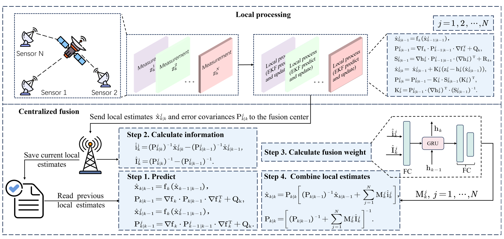

aState Key Laboratory of Optical Field Manipulation Science and Technology, Chengdu, 610209, Sichuan, ChinabInstitute of Optics and Electronics, Chinese Academy of Sciences, Chengdu, 610209, Sichuan, ChinacUniversity of Chinese Academy of Sciences, Beijing, 100049, Beijing, ChinadSchool of Mathematics, Sichuan University, Chengdu, 610000, Sichuan, ChinaeBeijing Institute of Mathematical Sciences and Applications, Huairou district, 101408, Beijing, ChinafHetao Institute of Mathematics and Interdisciplinary Sciences (HIMIS), Shenzhen 518000, Guangdong, China
This video demonstrates how multiple ground-based observation devices exchange information through communication with each other, enabling target tracking in a distributed scenario.
Abstract
In recent years, decentralized sensor networks have garnered significant attention in the field of state estimation owing to
enhanced robustness, scalability, and fault tolerance. Optimal fusion performance can be achieved under fully connected
communication and known noise correlation structures. To mitigate communication overhead, the global state estimation
problem is decomposed into local subproblems through structured observation model. This ensures that even when the
communication network is not fully connected, each sensor can achieve locally optimal estimates of its observable state
components. To address the degradation of fusion accuracy induced by unknown correlations in measurement noise,
this paper proposes a data-driven method, termed Decentralized Information Fliter Neural Network (
DIFNet), to learn unknown noise correlations in data for discrete-time nonlinear state space models with cross-correlated
measurement noises. Numerical simulations demonstrate that Decentralized IFNet achieves superior fusion performance
compared to conventional filtering methods and exhibits robust characteristics in more complex scenarios, such as the
presence of time-varying noise.
The DIFNet Framework
The fusion center refers to the processing facilities.
(a) Centralized: the fusion center computes the global estimate directly from all sensor measurements
$\vz$.
(b) Hierarchical: low-level fusion centers compute local estimates
$\hat{\vx}, \hat{\mP}$ from their own sensor measurements
$\vz$, and a high-level fusion center combines these local estimates into a global estimate.
(c) Decentralized: each fusion center computes a local estimate
$\hat{\vx}, \hat{\mP}$ from its own measurements
$\vz$, and then fuses it with estimates from neighboring centers to produce an individual fusion estimate.

Schematic diagram of the proposed DIFNet. The top part shows the generation of local estimates and error
covariances by local sensors. The bottom part illustrates the communication and implementation flow at each fusion center."